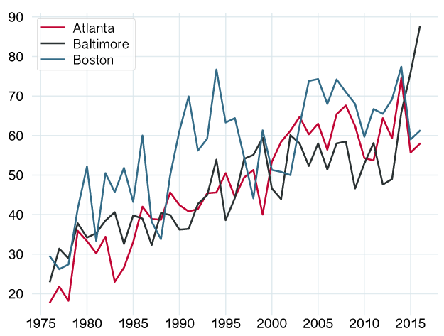

US crime
BY Matt Rehbein
Published August 24, 2018
In 1976, Atlanta police arrested a suspect in about 82% of homicide cases. That number -- the "clearance rate" in law-enforcement parlance -- steadily worsened in subsequent decades, eventually settling into an average of 39% from 2000 to 2016.
Is Atlanta's police department a worrying outlier in its struggles to solve a high proportion of homicides? Or is the city representative of a broader national problem?
Clearance rates in many American cities have suffered similar declines as Atlanta, according to data from the FBI and the Murder Accountability Project (MAP), a nonprofit that collects, distributes and analyzes information about homicides in the US. According to MAP's database, the US has seen 272,082 homicides since 2000, a number that includes murder and negligent and non-negligent manslaughter cases. Roughly 69% of those cases have been solved. In 2016, the most recent year currently in the database, more than 18,000 homicides were reported, two-thirds of which were solved.
Atlanta's highest clearance rate in the 21st century was in 2000, when it was 46.6%. 2014 marked the city's worst clearance rate at 25.5%. Looking at the city's homicides and clearance rates for each year in the database shows a gradual decline in the number of homicides, but a smaller percentage of the cases get solved as the years go by.
Atlanta homicides
SOURCE: FBI and The Murder Accountability Project
Here are the solved and unsolved homicides for all of the US over the same period:
Homicides nationwide
SOURCE: FBI and The Murder Accountability Project
To see how Atlanta compares to other major American cities, let's take a look at homicide numbers in Boston and Baltimore, both of which have populations in the same ballpark as Atlanta's. (Atlanta's population is a little under half a million; Baltimore's is above 600,000, and Boston's is a little bigger still.)
Boston's clearance rate on the 970 homicides it's seen since 2000 is 34.7%, according to the figures in MAP's database. Homicides in Baltimore are substantially higher: 4,365, and the city's police have solved 42.6% of them.
For the sake of comparison, let's track the percent of unsolved homicides since 1976 in the three cities.
Percentage of unsolved homicides in Atlanta, Boston & Baltimore

SOURCE: FBI and The Murder Accountability Project
Baltimore may have the best average clearance rate of the three since 2000, but you can see that the percentage of homicides left unsolved skyrocketed from 2014 to 2016. Atlanta's and Boston's lines mimic one another pretty closely during the most recent years in the database.
Some cities have succeeded in raising their homicide-clearance rates. MAP attributes that success to local political leaders' willingness to make solving homicides a major priority. A deeper analysis into the types of policies enacted and resources brought to bear on homicide cases in these cities may offer useful strategies to cities like Atlanta.